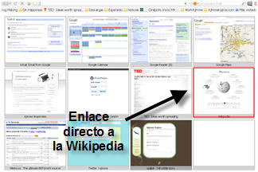
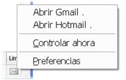
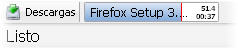
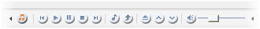

Navega como nunca con Firefox 3
La semana pasada comenté sobre la nueva versión de Firefox, en esta anotación hablaré como sacarle más provecho a este navegador.
Una de las mejores características de Firefox, es la capacidad de ampliar su funcionalidad instalando extensiones. Para quien nunca las haya utilizado, las extensiones en Firefox son pequeños agregados que al instalarlos, le dan nuevas capacidades al navegador.
Conozcan las siete extensiones más utiles (en mi opinión) para Firefox 3.
Accede rápido a tus sitios favoritos: Fast Dial
Esta extensión hace que cada vez que abras una pestaña nueva (ctrl+T), la página en blanco de antes, se convierta en un panel desde donde llegar a tus sitios más visitados. La pantalla de Fast Dial está dividida en 12 paneles en cada uno de los cuales puedes poner a un sitio favorito.

A la izquierda pueden ver cómo se ve una pestaña nueva en Firefox con Fast Dial. Las 4 primeras posiciones están ocupadas por sitios Google: Gmail, Calendar, Reader y Maps.
Pero supongamos que queremos acceder a la Wikipedia, para ello simplemente damos clic en el panel correspondiente (marcado en rojo). Ya no hay necesidad de escribir la dirección o buscar en marcadores para llegar a nuestros sitios visitados frecuentemente.
Si ya instalamos Fast Dial, para agregar un sitio a algún panel, simplemente iremos a ese sitio y haciendo clic derecho sobre la página seleccionamos la opción: “Add to Fast Dial” del menú emergente. Podemos marcar así un máximo de 12 sitios, los cuales podremos acomodar arrastrando sus imágenes en la pantalla de Fast Dial.
Todo tu correo, en cualquier momento: WebMail Notifier
Si tienes dos o más cuentas de correo, ya sabrás lo tedioso que es estar yendo de un sitio a otro escribiendo tu usuario y contraseña para saber si tienes correo nuevo. Con WebMail Notifier puedes saber en todo momento cuanto correo sin leer tienes, en todas y cada una de las cuentas que tengas, con sólo ver el pequeño ícono con forma de sobre en la esquina de Firefox.
Puedes controlar todas las cuentas que quieras en Yahoo, Hotmail y Gmail. Deberás introducir tu usuario y contraseña para que revise tu correo cada cierto tiempo, el cual puedes especificar. Las contraseñas las almacena localmente, así que no las confía a un tercero. Con un solo clic, te abre tu cuenta para contestar o escribir correo.
Navegación veloz: Fire Gestures
La navegación por gestos consiste en hacer ademanes con el mouse, por lo general oprimiendo el botón central o el botón derecho, lo que se convierte en instrucciones como: “Atrás”, “Pestaña nueva”, “Cerrar pestaña”, etcétera. En Firefox puedes tener los gestos de mouse con esta extensión.
Algunas de las secuencias predefinidas que trae FireGestures son:
- L (izquierda): Atrás
- R (derecha): Adelante
- LR (izquierda, derecha): Nueva pestaña
- DR (abajo, derecha): Cerrar pestaña
- UL (arriba, izquierda): Pestaña anterior
- UR (arriba, derecha): Pestaña siguiente
Todas manteniendo el botón derecho oprimido mientras se hace el movimiento.
Con esta extensión ya no tendrás que estar dando clic tantas veces en los menús o en los botones, basta con el mouse y un movimiento. Tambien puedes especificar un color para el rastro del mouse.
Recupera las pestañas cerradas: Undo closed Tabs
¿Alguna vez te ha pasado que has cerrado alguna pestaña por accidente? Entonces probablemente sabrás que para volverla a abrir hay que ir al menu Historial/Pestañas cerradas recientemente.
Undo closed Tabs, agrega un ícono al extremo izquierdo de tus pestañas, en el cual puedes hacer clic y recuperar las pestañas cerradas por accidente.
Descargas sin ventanas adicionales: Download status bar
Esta extensión elimina la ventana de descargas y agrega una barra de descargas en la parte inferior de Firefox, donde puedes ver el tiempo restante y la velocidad de descarga, al tiempo que te permite abrir los archivos termnados haciendo doble clic sobre ellos.
Controla tu música mientras navegas: Foxytunes
Con Foxytunes puedes controlador tu reproductor de música sin salir ni por un momento de Firefox. Ya no tendrás que estar cambiando de ventana para subir el volumen, cambiar de pista o poner pausa. Únicamente con hacer clic en los controles que Foxytunes pone en una barra de Firefox, controlarás tu musica mientras navegas sin interupciones.
Foxytunes es compatible con alrededor de 25 reproductores, entre ellos: Winamp, Windows Media Player, Foobar2000, Itunes, MediaMonkey, last.fm y VLC.
Protegido siempre, tú decides en quién confiar: NoScripts
En Firefox y en otros navegadores, la ejecución de código Javascript y de los plugins está activada por default. Esto significa que un sitio con código malicioso puede afectar nuestro equipo. NoScripts es una extensión que cambia esta situacion.
Al instalar la extensión, NoScript impide la ejecución de Javacript, Java, Flash y otros plugins hasta que le indiquemos lo contrario. Utiliza un sistema de “listas blancas”, de tal forma que nosotros podemos decirle si confiamos en un sitio y que puede ejecutar el código Javascript o la animación flash. También podemos elegir otorgar permisos temporales o permanentes.
{kind=link}
Configurando extensiones.
Una vez instaladas, puedes ver tus extensiones en el menú Herramientas/Agregados, en la pestaña Extensiones. En ese mismo sitio podrás configurarlas, o si es el caso, desinstalarlas.
Pruébalas y disfruta de Internet con Firefox 3.
Metadatos y acciones
 Temas: firefox, internet, recomendaciones ⋅
Para guardar: Enlace permanente a esta anotación.
Temas: firefox, internet, recomendaciones ⋅
Para guardar: Enlace permanente a esta anotación.
 Print This Post
Print This Post
Categorías
Últimas 4 anotaciones
Últimas anotaciones en cada categoría

Divulgación
El dinero no fomenta la creatividad: Daniel Pink en TEDGlobal 2009

Inspiración
Los 30 no son los nuevos 20

Noticias
Ver tu mente en tiempo real: Christopher deCharms en TED 2008
![Música en la era digital [Animación]](../../../wp-content/themes/tma/images/featured/animation_04_2009_featured.jpg)
Ocio
Música en la era digital [Animación]
Comentarios
Los comentarios están cerrados.
Comments are closed.